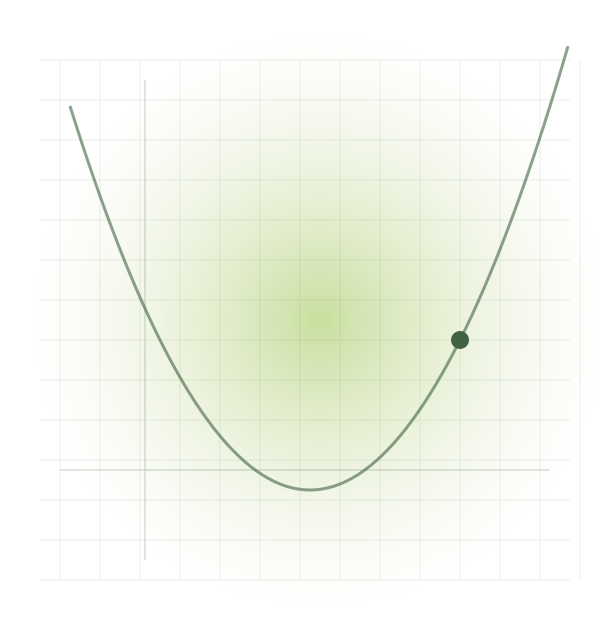
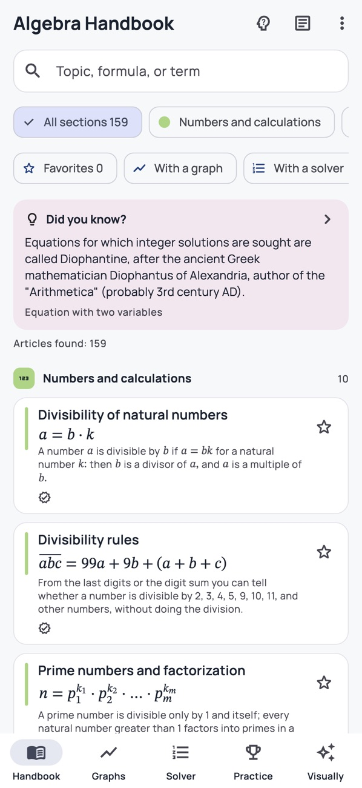

आलेख बदलताना पहा.
एक स्लाइडर हलवा आणि पॅराबोला (parabola) कसा बदलतो, तरंग (wave) कसा लांबतो किंवा स्पर्शिका (tangent) कशी सरकते ते पहा. एक समीकरण तुमच्यासाठी अनुभवण्यासारखे काहीतरी बनते.
अज्ञात घटकांमधून मार्ग शोधा.
प्रत्येक 'x' ची एक कथा असते.
पायऱ्यांचे अनुसरण करा, आलेख हलवा आणि सत्यता तपासा. हे शालेय बीजगणित आणि कॅल्क्युलसच्या सुरुवातीच्या टप्प्यांचा अर्थ लावण्याचा एक सोपा मार्ग आहे.
विनामूल्य डाउनलोड · आवश्यक 'प्रो' वैशिष्ट्ये


ॲपचा स्क्रीनशॉट
तुम्हाला हे का आवडेल
एक स्लाइडर हलवा आणि पॅराबोला (parabola) कसा बदलतो, तरंग (wave) कसा लांबतो किंवा स्पर्शिका (tangent) कशी सरकते ते पहा. एक समीकरण तुमच्यासाठी अनुभवण्यासारखे काहीतरी बनते.
उपाय तुम्हाला प्रत्येक पायरी दर्शवतात. उदाहरणे आणि दृश्यात्मक स्पष्टीकरणे तुम्हाला हे समजून घेण्यास मदत करतात की एखादे उत्तर कसे आले.
नवीन समस्या, प्रत्येक उत्तरा नंतर स्पष्टीकरण आणि सामान्य चुका तुम्हाला पुढील गोष्टीवर काम करण्यासाठी मदत करतात.
एकदा डोकावून पाहा
वास्तविक स्क्रीन. आत काय आहे, याचा अनुभव घ्या.
FAQ
सुरुवात करण्यापूर्वीच उत्तरे मिळवा
होय. 'हँडबुक' आणि त्याचे संदर्भ साहित्य स्थापित केल्यानंतर ऑफलाइन उपलब्ध आहे. 'ॲपल इंटेलिजन्स' वैशिष्ट्यांसाठी देखील सुसंगत डिव्हाइस आणि डाउनलोड केलेले सिस्टम मॉडेल आवश्यक आहे.
तुम्ही हे ॲप विनामूल्य डाउनलोड करू शकता. 'हँडबुक' हे 'प्रो' आवृत्तीशिवाय देखील उपयुक्त आहे; अतिरिक्त शिक्षण साधने आणि 'एआय' वैशिष्ट्ये ॲपच्या 'प्रो' योजनेवर अवलंबून असतात. ॲप स्टोअर आणि इन-ॲप खरेदी स्क्रीनवर सध्याचे पर्याय दर्शविलेले आहेत.
नाही. तुम्ही हे पुस्तिका वाचू आणि वापरू शकता. एआय (AI) शिक्षक वैकल्पिक आहे आणि त्याला ॲपल इंटेलिजन्स (Apple Intelligence) सुरू असलेल्या आयफोन (iPhone) किंवा आयपॅडची (iPad) आवश्यकता आहे; समर्थित भाषा तुमच्या प्रणालीवर अवलंबून असतील.
हे ॲप आयफोन आणि आयपॅडसाठी उपलब्ध आहे. सध्याच्या ऑपरेटिंग प्रणाली (operating system) आणि उपकरणांसाठी आवश्यक गोष्टींसाठी ॲप स्टोअर पेज तपासा.
विनामूल्य डाउनलोड · आवश्यक 'प्रो' वैशिष्ट्ये
AI ट्यूटर हे Pro वैशिष्ट्य आहे. त्यासाठी सुसंगत iPhone किंवा iPad, iOS/iPadOS 26 किंवा नंतरची आवृत्ती आणि सक्रिय Apple Intelligence आवश्यक आहे. उपलब्धता भाषा आणि प्रदेशानुसार बदलते. AIच्या उत्तरांमध्ये चुका असू शकतात.